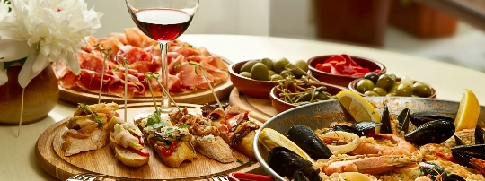
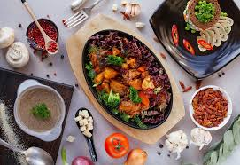

Nacionālās Spānijas virtuves pamatā ir dārzeņi, olīveļļa, garšaugi, ķiploki, salvija, sarkanie pipari. Spāņu virtuvei ir raksturīga šāda īpašība: daži ēdieni tiek grilēti, citi sautēti vīnā, bet citi tiek cepti no aitas siera. Valsts ziemeļdaļā tiek cienāti zivju ēdieni - "marmitaco" (makrele ar kartupeļiem), "pulpo-a-feira" (vārīts astoņkājis), "changurro" (krabju un vēžveidīgo asorti); Spānijas centrālajā daļā - "cosido" (bagātīga zupa), jamon Iberico, Serrano, Delantero un citi jamonu veidi; dienvidos - gazpacho un saldie turroni.
Visus ēdienus pasniedz papildinātus ar daudzveidīgām, pikantām un aromātiskām mērcēm. To pagatavošanai ir simtiem recepšu. Visdažādākos salātus un zaļumus ceļ galdā gan kā patstāvīgus ēdienus, gan kā piedevas zivju ēdieniem.
